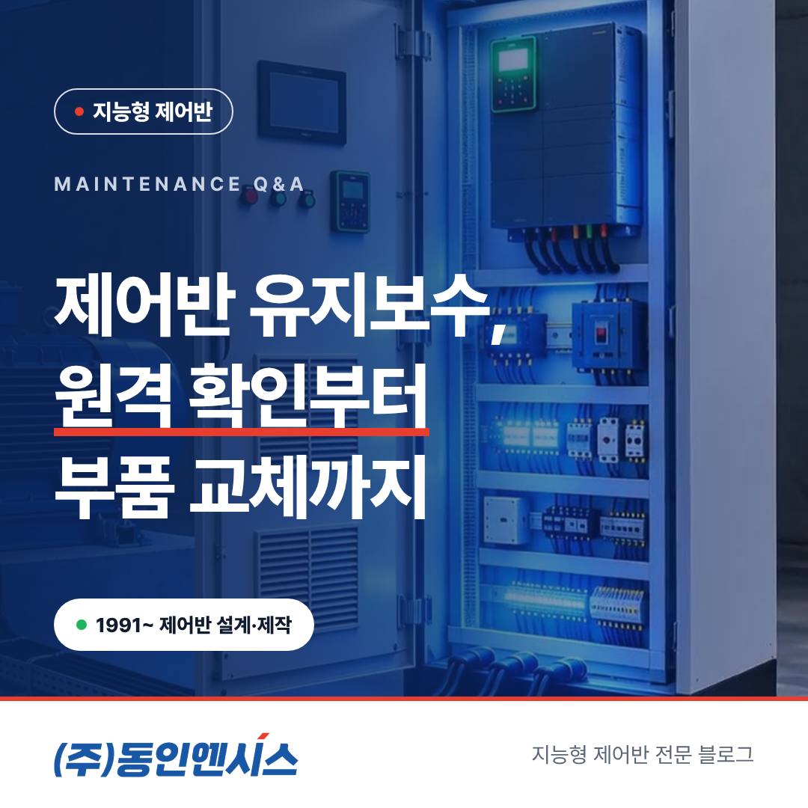
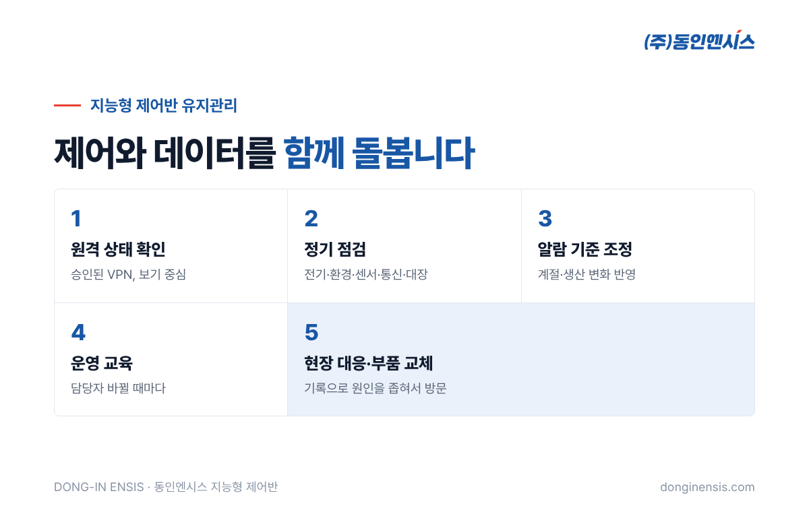
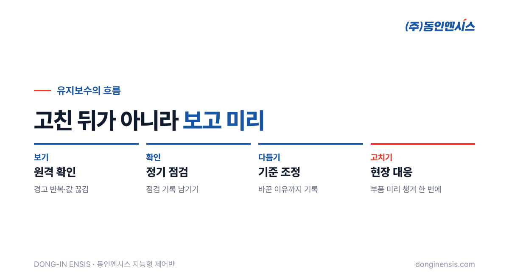

제어반은 설치하고 시운전을 마치면 끝나는 물건처럼 보입니다. 하지만 실제로는 그때부터가 진짜 시작입니다. 부품은 시간이 지나며 조금씩 닳고, 계절이 바뀌면 설비의 평소 모습도 달라지고, 담당자가 바뀌면 화면을 보는 법도 처음부터 다시 익혀야 합니다. 특히 데이터를 모으는 지능형 제어반은 제어 기능과 함께 데이터 쪽도 꾸준히 챙겨야 제 역할을 합니다. 부산에서 30년 넘게 제어반을 만들고, 만든 뒤의 관리까지 맡아 온 동인엔시스가, 제어반 유지보수에 대해 고객사가 자주 묻는 질문에 차례로 답했습니다.
일반 제어반의 유지보수는 주로 '잘 켜지고 잘 꺼지는가'를 지키는 일입니다. 눈에 보이는 고장을 막고 고치는 데 초점이 있습니다. 차단기와 접촉기, 단자 체결 상태를 보고, 고장 난 부품을 바꿉니다.
지능형 제어반은 여기에 두 가지가 더해집니다. 하나는 데이터가 제대로 모이고 제대로 전송되는지 지키는 일이고, 다른 하나는 그 데이터를 판단하는 기준, 즉 경고와 알람 기준값이 현장에 맞게 유지되는지 살피는 일입니다. 제어와 데이터, 두 가지를 함께 돌보는 것이 차이입니다. 데이터가 멈추면 설비는 돌아도 '보는 눈'이 사라지고, 기준이 어긋나면 데이터는 쌓여도 '판단'이 흐려집니다. 그래서 지능형 제어반의 제어반 유지보수는 손볼 대상이 하나 더 많다고 보시면 됩니다.
동인엔시스의 유지관리는 크게 다섯 가지로 이루어집니다. 원격 상태 확인, 정기 점검, 알람 기준 조정, 운영 교육, 그리고 현장 대응과 부품 교체입니다.

원격 상태 확인은 현장에 가지 않고도 제어반과 설비의 상태를 살피는 일입니다. 데이터가 제때 들어오고 있는지, 특정 설비에서 경고가 반복되고 있지는 않은지, 값이 갑자기 끊기거나 이상하게 튀는 센서는 없는지를 봅니다. 값이 이상하게 튀는 경우는 설비보다 센서나 배선 쪽 문제일 때도 많아서, 원격으로 먼저 걸러 두면 현장 방문 때 확인할 곳을 좁힐 수 있습니다.
이때의 연결 통로는 고객이 미리 허락한 VPN 하나뿐입니다. 그리고 원격으로 하는 일은 '보는 일'이 중심입니다. 설비를 멈추거나 움직이는 최종 판단과 인터록은 언제나 현장 PLC가 맡고, 서버는 설비를 직접 제어하지 않는 구조이기 때문입니다. 원격 확인이 편리하다고 해서 현장의 안전 장치를 건너뛰지 않도록 설계해 두었습니다.
정기 점검은 엔지니어가 현장에 직접 가서 제어반 안팎을 확인하는 일입니다. 일반적으로 이런 것들을 봅니다.
마지막 항목이 지능형 제어반다운 부분입니다. 동인엔시스는 제어반마다 PLC 모델·버전과 암호화 통신에 쓰는 인증서의 만료일을 대장으로 관리합니다. 만료일을 놓치면 어느 날 데이터가 끊길 수 있기 때문에, 점검 일정과 함께 챙깁니다. 점검이 끝나면 확인한 내용과 손본 부분을 기록으로 남겨, 다음 점검 때 무엇이 달라졌는지 비교할 수 있게 합니다.
Photorealistic photo of a Korean electrical engineer in a navy work uniform and safety glasses inspecting the inside of an open light-grey industrial control cabinet with a flashlight, checking terminal blocks and a small cooling fan filter, clipboard with a blank checklist (no readable text) hanging nearby, factory setting, documentary style, no brand logos, no readable text. 3:2 landscape.
경고와 알람의 기준은 설치 직후 몇 주 동안 설비가 실제로 어떻게 움직이는지를 지켜본 뒤 처음 잡습니다. 그런데 설비의 평소 모습은 고정되어 있지 않습니다.
기준을 그대로 두면 경고가 너무 자주 떠서 아무도 보지 않게 되거나, 반대로 너무 느슨해서 정작 필요한 순간에 울리지 않습니다. 그래서 기록을 보며 기준을 현장에 맞게 다시 맞추는 일이 유지관리의 중요한 부분입니다. 기준을 바꿀 때는 왜 바꿨는지도 함께 남겨 두어, 나중에 경고가 늘거나 줄었을 때 그 이유를 추적할 수 있게 합니다.
지능형 제어반의 가치는 누군가 화면을 보고 움직일 때 나옵니다. 처음 도입할 때 담당자에게 화면 보는 법과 경고·알람이 떴을 때의 대응 방법을 교육하지만, 담당자는 바뀌기 마련입니다.
새 담당자가 왔을 때, 또는 설비가 늘어 화면 구성이 바뀌었을 때 다시 교육을 하면 쌓인 기록이 계속 쓰이는 상태로 유지됩니다. 장비를 지키는 일만큼 사람이 장비를 쓰는 습관을 지키는 일도 유지보수에 들어간다고 보시면 됩니다. 교육 때는 화면 조작뿐 아니라 '이 경고가 뜨면 무엇부터 보는지'를 실제 기록을 펼쳐 놓고 함께 연습합니다.
현장 대응이 필요하면 엔지니어가 방문해 원인을 확인하고 부품을 교체합니다. 이때 지능형 제어반의 기록이 큰 도움이 됩니다. 언제부터 어떤 값이 이상했는지, 경고가 몇 번 떴는지가 남아 있으니, 현장에 가기 전에 어느 부위를 먼저 볼지 짐작할 수 있습니다. 필요한 부품을 미리 챙겨 갈 수 있어 한 번의 방문으로 끝나는 경우가 늘어나고, 설비가 멈춰 있는 시간도 그만큼 줄어듭니다.
동인엔시스는 인버터를 서랍처럼 빼고 끼울 수 있게 만든 '모듈러 인출식 VFD 판넬' 특허도 갖고 있습니다. 이런 인출식 구조가 적용된 현장에서는 고장 징후가 보일 때 설비 전체를 세우지 않고 해당 모듈만 바꿀 수 있습니다. 적용 여부는 현장 조건에 따라 설계 단계에서 정합니다.

점검 주기와 원격 확인 방식, 현장 대응 범위는 설비 수와 중요도, 고객사 내부 인력에 따라 달라지므로 프로젝트마다 협의해 정합니다. 내부에 설비 담당자가 충분하다면 원격 확인과 기준 조정 위주로, 담당 인력이 적다면 정기 점검과 현장 대응까지 넓게 잡는 식입니다.
정할 때 함께 고민하면 좋은 질문은 이렇습니다. 멈추면 가장 곤란한 설비는 무엇인지, 알람이 울리면 누가 먼저 확인하는지, 정비는 주로 언제 할 수 있는지. 이 답에 맞춰 범위를 짜면 같은 비용으로도 훨씬 쓸모 있는 유지보수가 됩니다. 운영하면서 범위가 맞지 않다고 느껴지면 그때 다시 조정하면 됩니다.
Photorealistic photo of a Korean engineer at an office desk with a laptop showing an abstract list of control panels with green and yellow status dots and small trend lines (no readable text), a desk calendar and coffee mug, calm modern office, soft daylight, documentary style, no brand logos, no readable text. 3:2 landscape.
제어반 유지보수는 고장 난 뒤 고치는 일에서, 기록을 보고 미리 손보는 일로 바뀌고 있습니다. 원격으로 지켜보고, 정기적으로 확인하고, 기준을 다듬고, 사람을 가르치고, 필요할 때 바로 고치는 것. 동인엔시스는 제어반을 만든 손으로 그 이후의 시간도 함께합니다.
유지관리 문의 051-862-3668 · dongin@donginmne.com
아래 질문 중 하나에 실제 경험으로 답해 본문 적당한 곳에 넣어 주세요. 사람이 직접 쓴 문장이 들어가면 네이버에서 저품질 위험이 줄고 노출에 도움이 됩니다.